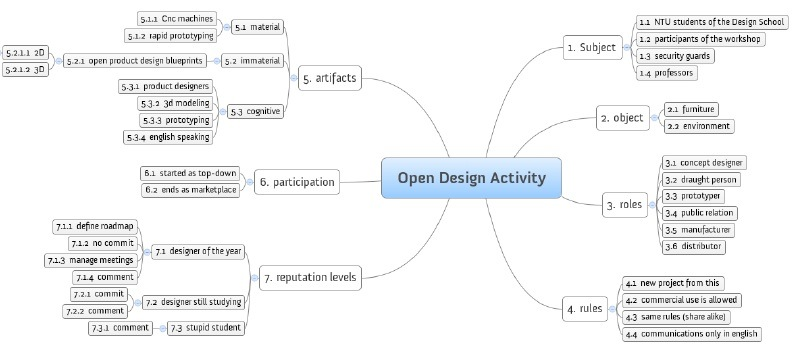
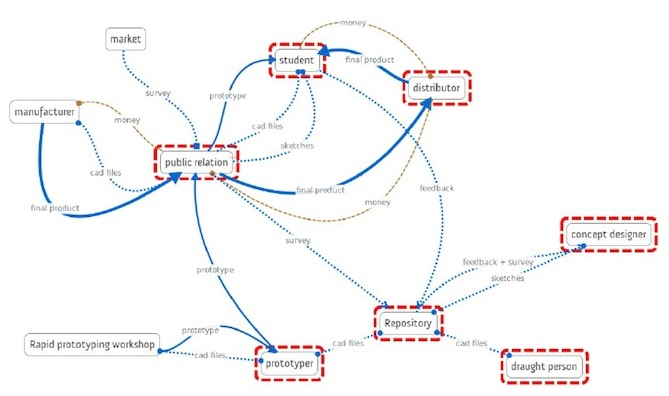

Design with the user
05 December 2013
1. Open Meta-design
A more systemic definition of Open Design (2)
A system of agents that:
- use
- design
- manufacture
- distribute
- manage the end of life
- ...
Towards Activity-centered Design
HCD asserts as a basic tenet that technology adapts to the person. In ACD, we admit that much of human behavior can be thought of as an adaptation to the powers and limitations of technology.[...] People do adapt to technology. It changes social and family structure. It changes our lives. Activity-Centered Design not only understands this, but might very well exploit it.
Source: Norman, D. A. (2005). Human-centered design considered harmful. interactions, 12(4), 14–19. doi:10.1145/1070960.1070976 Retrieved from http://www.jnd.org/dn.mss/human-centered_desig.html
Activity Design
- analysis of an activity
- design of an activity
- service design: design of interactions in space and time
Activity Design
- design of a collaborative activity
- meta-design of a collaborative design process
- open p2p design: collaborative meta-design + design of a collaborative activity
Meta-design

Examples: a workshop in Singapore

Examples: a workshop in Singapore - Analysis

Examples: a workshop in Singapore - Timeline
Examples: a workshop in Singapore - Activity
Examples: a workshop in Singapore - System rev. 20
Examples: a workshop in Singapore - System rev. 21

Examples: a workshop in Singapore - Poster

Examples: a workshop in Helsinki

http://www.openp2pdesign.org/2013/workshop/an-open-p2p-design-workshop-in-helsinki/
Lunch time! Questions?
See you at 13:00
Open Meta-design: how to do it
- analyse the community / local context
- identify the process
- identify the activities in the process
- identify a timeline of the activities
- identify flows between activities
- identify repositories
- identify branches
- identify business models for each activity
- ...
Thank you!
Massimo Menichinelli / info@openp2pdesign.org / @openp2pdesign

This work is licensed under a Creative Commons Attribution 3.0 Unported License.
Massimo Menichinelli - 2013
openp2pdesign.org